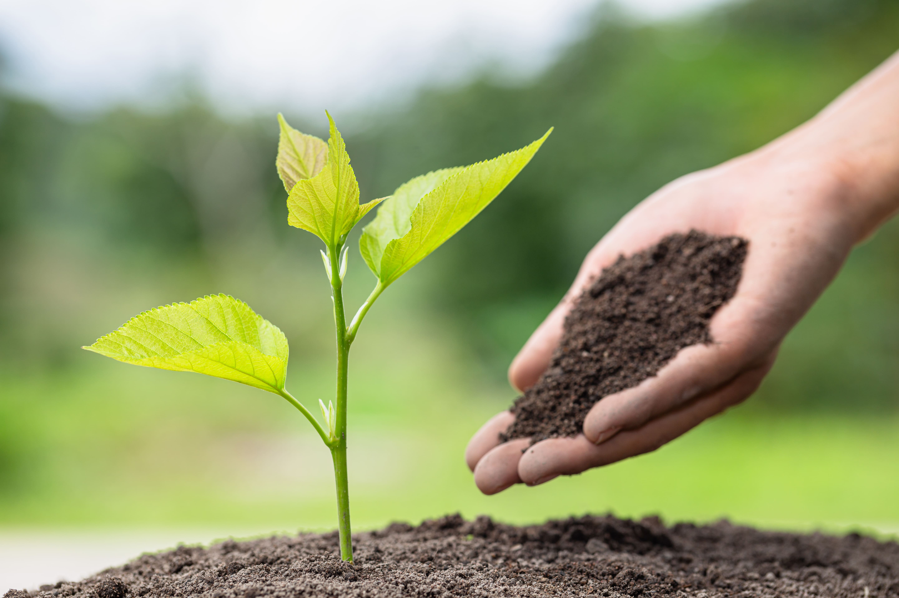

We'd be happy to share our expertise and explore potential solutions to address your
inquiries.
LET'S EMBARK ON YOUR DREAM PROJECT
Supercharge Your Garden – Simple Steps To Healthy Thriving Soil
O VERCARDO VERCARDO VERCARDO
The Alchemy of Abundance: Cultivating a Thriving Terrestrial Ecosystem in Your Garden

The foundation of a flourishing garden lies not in vibrant blooms or meticulously manicured landscapes, but in the unseen world beneath our feet: the soil. It serves as the very lifeblood of your horticultural endeavors, a teeming metropolis of microscopic organisms and a complex interplay of physical elements.
This article delves into the intricate world of soil health, exploring the characteristics of a thriving terrestrial ecosystem and the methods for nurturing this vital resource.
The Essence of Healthy Soil: A Symbiotic Dance
Healthy soil is more than just dirt; it's a vibrant tapestry woven from a multitude of actors. Plants, animals, and a myriad of microorganisms engage in a captivating symbiotic dance, each contributing to the overall health and fertility of the soil. Billions of beneficial bacteria, fungi, and insects reside within a single handful of soil, tirelessly breaking down organic matter and transforming it into readily available nutrients for plants. This intricate web of life ensures the optimal growth and resilience of your garden.
Vercardo champions the concept of fostering healthy soil by introducing specialized fungi called Mycorrhizae. These fascinating organisms form a mutually beneficial relationship with plants, acting as microscopic extensions of the root system, delivering essential nutrients directly to the roots for enhanced growth. Additionally, bacteria and fungi play a pivotal role in decomposing plant debris, releasing a steady stream of vital nutrients back into the soil, creating a self-sustaining cycle of nourishment.
Beyond its role in feeding plants, healthy soil offers a plethora of benefits, including:
• Reduced Pest Problems: A thriving soil ecosystem promotes the presence of beneficial insects that naturally control pest populations.
• Enhanced Water Management: Healthy soil provides optimal drainage, ensuring roots receive sufficient oxygen while preventing waterlogging.
The Trinity of Soil Health: Air, Water, and Nutrients
Three fundamental elements contribute to a thriving soil environment: air, water, and nutrients. Each plays a crucial role in plant growth and development.
• Air: Soil acts as a haven for tiny air pockets, facilitating gas exchange and providing oxygen to plant roots and the resident microfauna. Conversely, compacted soil restricts airflow, suffocating both roots and beneficial organisms.
• Water: Healthy soil acts as a natural reservoir, regulating drainage and ensuring water reaches plant roots while preventing waterlogging. Poor drainage deprives roots of oxygen, while excessive drainage prevents plants from absorbing the water they need to survive.
• Nutrients: All plants require a specific blend of seventeen essential nutrients for optimal growth. These nutrients are classified into two categories: macronutrients, needed in larger quantities, and micronutrients, required in smaller amounts. Plants can acquire nutrients from various sources, including air, fertilizers, and organic matter. Conversely, poor soil tends to lose nutrients rapidly, depriving plants of vital resources.
The Quest for the Ideal Garden Soil: A Myth or Reality?
The concept of an ideal garden soil exists, but it's not a one-size-fits-all solution. Different plant species thrive in specific soil conditions. Vercardo acknowledges this variability by offering a diverse range of soil blends tailored to meet the unique needs of each plant.
At its core, the ideal garden soil is a harmonious blend of air, water, and nutrients, catering to the specific requirements of the plants you wish to cultivate.
A crucial factor influencing soil health is its texture, which is determined by the relative proportions of sand, silt, and clay particles. These particles vary in size and significantly impact soil functionality.
• Sand: While offering excellent drainage, sandy soils struggle to retain water and nutrients, posing a challenge for plant growth.
• Silt: Silt particles, smaller than sand but larger than clay, excel at retaining water and nutrients. However, silt-rich soils are prone to compaction, hindering water infiltration.
• Clay: Clay particles are the smallest, boasting exceptional water and nutrient retention capabilities. However, clay-heavy soils can become dense and impede drainage, potentially leading to waterlogging.
Determining your soil texture is a simple process. Take a handful of moist soil from several inches below the surface, form it into a ball, and then attempt to roll it into a ribbon. A successful ribbon indicates high clay content, while crumbling soil signifies a sandy composition.
The ideal garden soil typically possesses a loamy texture, signifying a balanced blend of all three particle types. It's important to remember that plant preferences regarding moisture content vary significantly. Some plants flourish in sandy soils, while others thrive in clay-rich environments. Understanding these preferences and placing plants in appropriate locations is crucial.
O VERCARDO VERCARDO VERCARDO
Cultivating Abundance: Methods for Enhancing Soil Health
Now that we've delved into the essence of healthy soil, let's explore practical methods for nurturing this vital resource:
1. Embrace the Power of Mulch: Mulch offers a plethora of benefits for both your plants and the soil itself. As it decomposes over time, it seamlessly integrates with the earth, adding precious organic matter that bolsters fertility.
Several mulch options grace the gardener's palette. Wood mulch, a popular choice, provides a long-lasting solution, gradually releasing nutrients as it breaks down. Additionally, its aesthetic appeal enhances the visual harmony of your landscape.
Leaves, a readily available resource, can also be employed as mulch. Pine needles, for instance, not only decompose to release nitrogen, but also possess allelopathic properties, suppressing unwanted weeds. However, a common misconception persists: pine needles do not alter the soil's pH level.
While mulch offers numerous advantages, moderation is key. Restrict excessive application, particularly near the base of woody plants. A layer of 3-4 inches at planting is sufficient, with a thin topdressing added annually if necessary. Furthermore, avoid applying mulch directly against the crown of perennials, as the resulting organic matter build-up can hinder air circulation and promote rot.
2. The Alchemical Power of Compost: Gardener's Gold: Compost, aptly nicknamed "gardener's gold," rightfully earns its praise. Yard waste, through the magic of decomposition, transforms into a nutrient-rich organic marvel. This fertile concoction boasts an abundance of micro and macronutrients that are gradually released, providing sustained nourishment for your plants. Compost serves as the ideal fertilizer, suitable for both incorporation into the soil and as a mulch topdressing.
The process of composting hinges on the tireless work of microorganisms who break down plant materials, enriching the resulting product with valuable nutrients. The addition of compost fosters a thriving microbial population within the soil, enhancing its structure and facilitating the movement of water, air, and essential nutrients. This translates to improved soil workability, regardless of its initial texture.
The recipe for creating compost involves a harmonious blend of three key ingredients: browns, greens, and water. Browns, such as dead leaves and twigs, serve as a carbon source. Greens, on the other hand, provide nitrogen and can include vegetable scraps, coffee grounds, and untreated grass clippings. Water plays a crucial role in maintaining moisture, facilitating decomposition by our microbial allies. Layering these components optimizes the composting process, leading to a faster transformation of waste into valuable soil amendment.
3. The Enduring Benefits of Composted Manure: Animal manure constitutes another excellent source of organic matter for your garden. Its advantages mirror those of compost, making it an ideal long-term solution for soil improvement. Typically sourced from herbivores like cows, sheep, and chickens, manure offers a wealth of nutrients, although the specific nutrient profile varies depending on the animal and storage methods employed.
For optimal integration into your garden, opt for composted manure. This process eliminates concerns about burning plants and unpleasant odors while still providing a valuable source of organic matter to enhance soil structure. While the nutrient content of composted manure may be lower, its impact on the soil's ability to retain nutrients from other organic amendments, like compost, is undeniable. The most effective approach for incorporating composted manure involves directly working it into the garden soil.
4. Unveiling the Secrets of Your Soil: The Power of Testing: Sluggish plants with pallid leaves can be a telltale sign of soil health issues. Given the diverse potential causes of plant woes, a soil test becomes an invaluable tool for gauging the underlying state of your garden's foundation. This test provides a detailed breakdown of the nutrient levels present within the soil, including a crucial indicator: soil pH.
By understanding the existing soil conditions, you gain valuable insights into your growing environment. While poor soils may lack essential nutrients, even healthy soils can exhibit adequate or even excessive levels of certain nutrients. For plants with a strong preference for a specific pH, such as rhododendrons that thrive in acidic conditions, a soil test conducted prior to planting is crucial. Most soil tests also measure the percentage of organic matter present, which ideally falls within the 4-6% range for ornamental beds.
Acquiring a soil test kit is a straightforward process, and readily available resources guide you through the testing procedure. Early spring, just before the growing season commences, is the ideal time for conducting a soil test. Leverage the results to inform your decisions regarding the addition of specific nutrients to your garden.
Understanding the health of your soil will lead to a stronger ability to choose the right actions to improve your soil health in the future.
5. Unveiling Nutrient Needs: Soil analysis serves as a crucial diagnostic tool, revealing your soil's inherent nutrient profile. This empowers you to tailor amendments and fertilizers for optimal plant health. The analysis will often provide specific recommendations based on the identified nutrient deficiencies. However, if access to a soil test is unavailable, visual indicators from your plants themselves can be valuable.
Consider the case of Rhododendrons, which flourish in acidic environments. Planting them in alkaline soil results in a sickly appearance, indicative of their struggle to acquire necessary nutrients. While soil amendments exist to modify the pH levels (acidity/alkalinity), the process can be time-consuming, dependent on the soil's texture.
Fertilizer Fundamentals: Synthetic vs. Organic Options
Fertilization serves as a method to replenish the nutrient reserves of both plants and soil. However, it's imperative to comprehend the nuanced role of fertilizers.
Many synthetic fertilizers boast rapid nutrient release, granting plants immediate access. Yet, these readily available nutrients are quickly depleted, offering only short-term benefits. While synthetic fertilizers may nourish plants, they often fail to enhance the long-term health of the soil.
Organic and natural fertilizers, in contrast, offer a sustained release of nutrients, enabling prolonged access for plants. While the effects of organic fertilizers might not be immediately apparent, they frequently nurture both soil and plants simultaneously.
6: Cultivating a Thriving Subterranean Ecosystem: Maintaining Soil Health: A cornerstone of soil quality improvement lies in its ongoing maintenance. When establishing planting beds, incorporating organic matter plays a pivotal role in fostering healthy soil. For sustained soil health, annual additions of organic matter are essential.
Here are three key practices to cultivate a flourishing subterranean ecosystem year-round:
1. Fall Foliage Transformation: Consider utilizing fallen leaves in autumn as a natural source of organic matter for your planting beds. Broadleaf trees, such as maples and birches, offer excellent mulch options. Shredding the leaves before application expedites decomposition. Alternatively, create designated leaf piles to generate leaf mold, a type of compost derived solely from leaves. Pine needles can also be employed as mulch if pine trees are present.
2. Treading Lightly on Damp Ground: When the soil is saturated, avoid foot traffic on your planting beds. This compacts the soil, hindering its health. Patience is paramount during the eagerness of early spring gardening. By refraining from working the damp ground, you contribute to maintaining soil quality.
3. Right Plant, Right Place: Different plants thrive in varying moisture conditions. Some require well-drained soils, while others prefer consistently moist environments. Before planting, meticulously consider factors like sunlight and wind exposure to select plants that flourish in your specific yard. By harmonizing with nature, you cultivate healthy soil and a thriving ecosystem.
COLLABORATE WITH VERCARDO – BRING YOUR VISION TO LIFE
We're passionate about transforming ideas into thriving landscapes, functional buildings, and flourishing horticultural spaces. We don't just offer services; we become your trusted advisor, sharing insights, suggesting creative options, and answering your questions every step of the way.